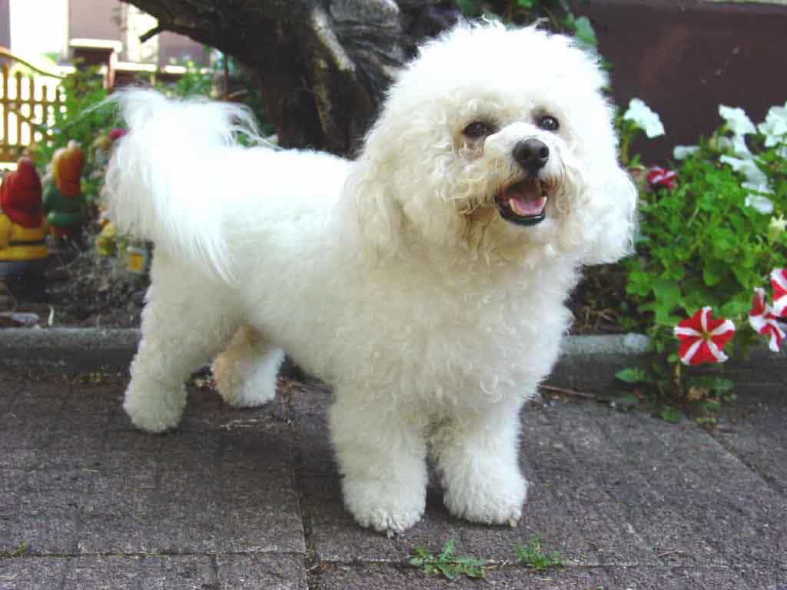
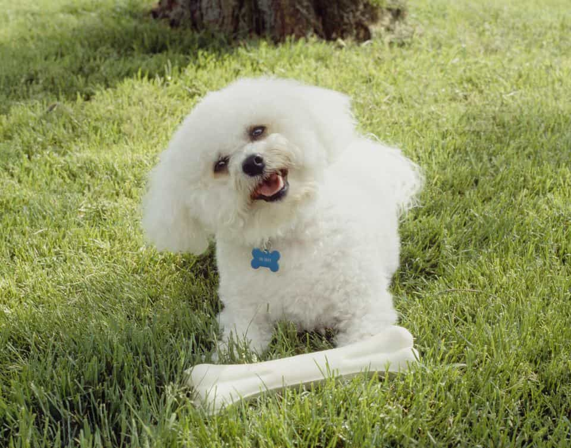

mô tả sản phẩm
Bichon Frise
Điều đầu tiên khiến mọi người ấn tượng về Bichon Frise là ở ngoại hình có kích thước cực nhỏ. Một con trưởng thành sẽ có chiều cao khoảng 23-30 cm, nặng 5-10kg. Cũng có những con Bichon Frise to hơn nhưng khá hiếm.
Đầu của chó Bichon Frise tròn, đôi mắt màu đen nháy. Chiếc mũi nhỏ xinh nhưng rất thính. Nhìn tổng thể Bichon Frise có một thân hình cân đối. Tỉ lệ của các bộ phận trên cơ thể rất đều nhau.
Điểm nổi bật nhất của chú chó này là ở bộ lông xù trắng như tuyết, bao trùm toàn bộ cơ thể. Không giống như những loài chó khác, lông của Bichon Frise rất ít khi rụng, không bám bụi bẩn. Những người nuôi chó thường cắt tỉa lông có độ dài ngang nhau để thân hình của Bichon Frise trông tròn trịa hơn.
Tai của Bichon Frise dài, cụp xuống hai bên má. Tuy nhiên do bộ lông quá dài và xoăn nên đã che mất tai, khiến cho bạn rất khó nhìn thấy tai của chúng. Một số người thường nhầm lẫn chó Bichon Frise và chó Poodle. Một số đặc điểm giúp bạn phân biệt hai giống chó này là:
- Bichon có lông ở mặt, đuôi, tai dày hơn rất nhiều so với Poodle.
- Nhìn tổng thể thân hình của Bichon Frise tròn trịa hơn so với Poodle.
- Bichon Frise thuần chủng chỉ có lông màu trắng. Còn Poodle có rất nhiều màu lông như: nâu, đen, socola, trắng…
Tính cách
Ở chó Bichon Frise hội tụ đầy đủ những tính cách của một chú “thú cưng” mà bạn tìm kiếm: thông minh, thân thiện, vui vẻ, xinh xắn, đáng yêu. Chó Bichon Frise sống rất tình cảm, thích làm bạn với con người và đặc biệt là trẻ nhỏ. Bạn có thể để chúng vui chơi với trẻ em mà không lo chúng tấn công hay gây nguy hiểm gì đến trẻ.
Bichon Frise biết cách cư xử đúng đắn, lịch sự với chủ nhân của chúng. Giống chó này thích quấn quýt, gắn bó với con người. Chúng sẽ không chịu nổi cô đơn khi phải ở một mình quá lâu.
Đáng yêu và thông minh, Bichon Frise biết cách làm cho bạn vui mỗi ngày. Chúng là người bạn trung thành của con người, rất thân thiện và hòa đồng với các vật nuôi khác. Vì thế bạn có thể nuôi nhiều con vật khác trong nhà mà không cần lo lắng chúng “tranh đấu” với nhau.
Tuy nhiên nếu bạn quá chiều chuộng, Bichon Frise sẽ có thể sẽ lười biếng, nhõng nhẽo. Ngay từ khi chúng còn nhỏ hãy huấn luyện nghiêm khắc để chúng ngoan ngoãn, nghe lời hơn.
Đôi lúc chúng cũng tỏ ra nghịch ngợm, phá phách một chút giống như những đứa trẻ vậy. Nhưng điều đó sẽ không khiến bạn khó chịu. Ngược lại bạn sẽ thấy Bichon Frise có nét đẹp thật đáng yêu, dễ thương.